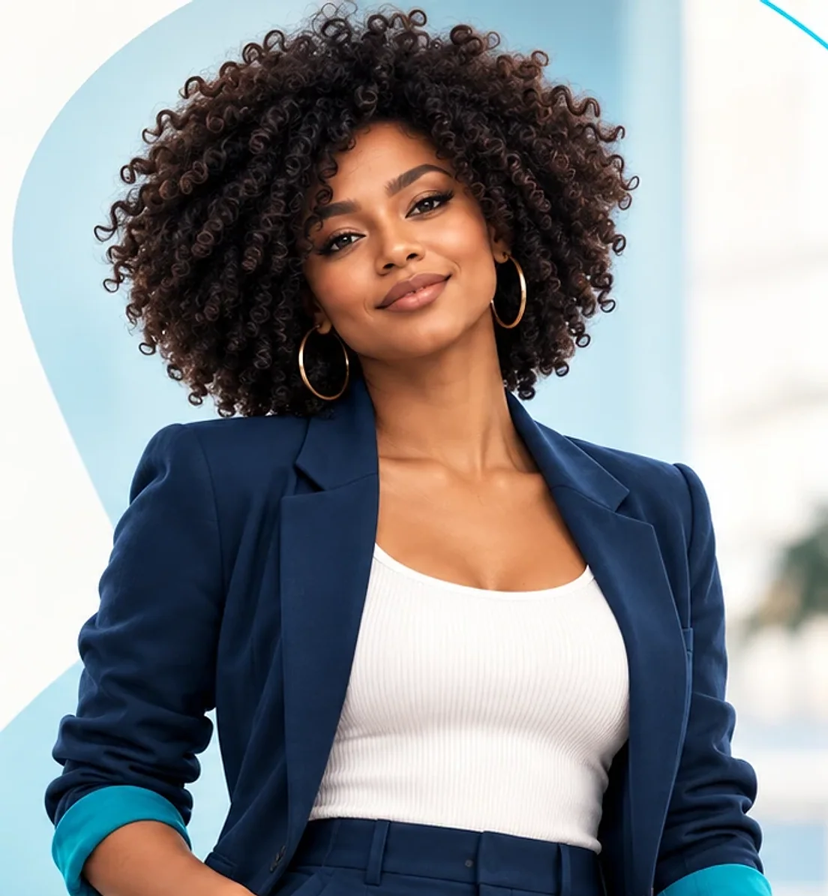

O resultado
A UORT escolheu.
33 pessoas que vivem a UORT por dentro decidiram quem vai representar a marca, qual será o nome e o jeito do novo personagem.
Escolha 01 · Quem representa a UORT
Ela ou ele?

27 de 32 votos escolheram a proposta feminina.
Escolha 02 · O nome
E o nome dela é…
MAIA
79% dos votos · Íris ficou com 21%
- MMovimentoo que a UORT ajuda cada pessoa a recuperar e manter
- AAcolhimentoo jeito de receber quem chega
- IInformaçãoclara, confiável e fácil de entender
- AAcessoo caminho até o especialista certo
O DNA da Maia
Acolhedora, bem‑humorada e confiável.
As três características mais escolhidas vão guiar como ela conversa, explica e reage.
- Acolhimento72% Quase 3 em cada 4 escolheram. É também o A de MAIA.
- Bom humor50% Leveza na medida certa, sem perder a seriedade do cuidado.
- Confiança34% Informação segura, com quem entende do assunto.
uortOrtopedia e Traumatologia
Maia pergunta
Você sabe quando procurar o Pronto Atendimento?
Como ela começa
A estreia da Maia
A primeira conversa já está escolhida: quando procurar o Pronto Atendimento. A Maia levanta a dúvida; quem explica é o especialista da UORT.
- Visual mais esperadoProfissional64%
- Onde aparece primeiroStories52%
- Assunto que mais puxaQuando procurar atendimento44%
Prazer, Maia.
A nova personagem da comunicação da UORT.
- Movimento
- Acolhimento
- Informação
- Acesso
Movimento em todas as fases da vida.
Obrigado a todos que participaram da escolha.